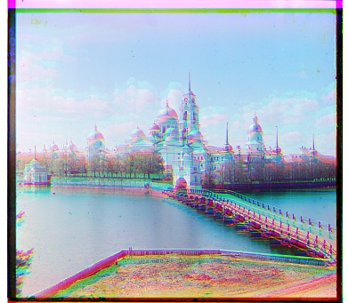
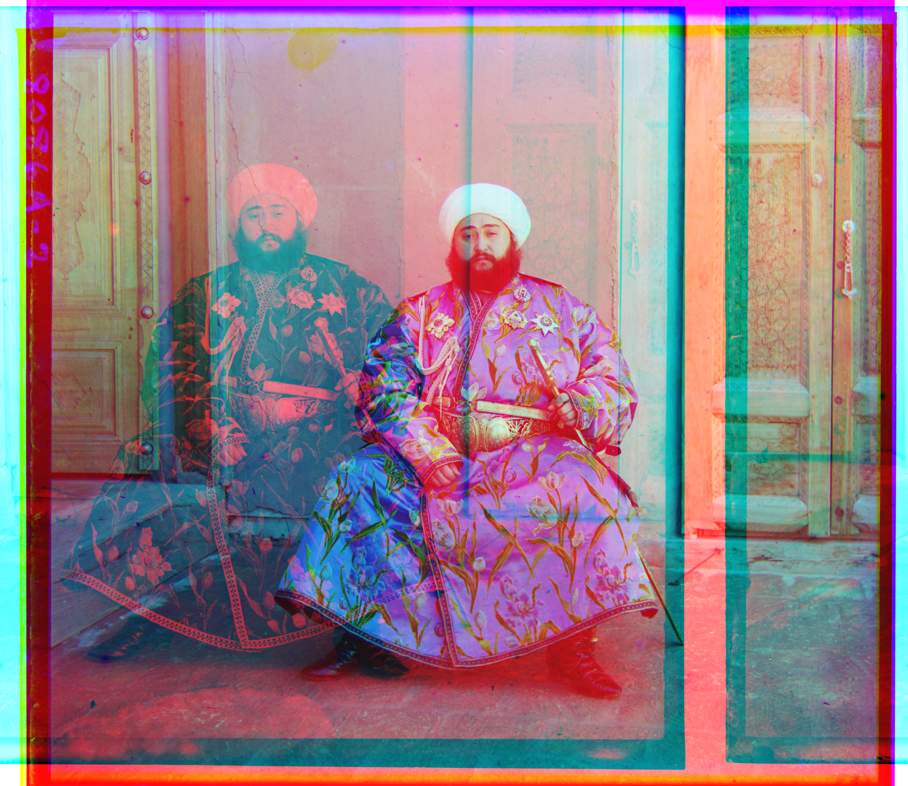
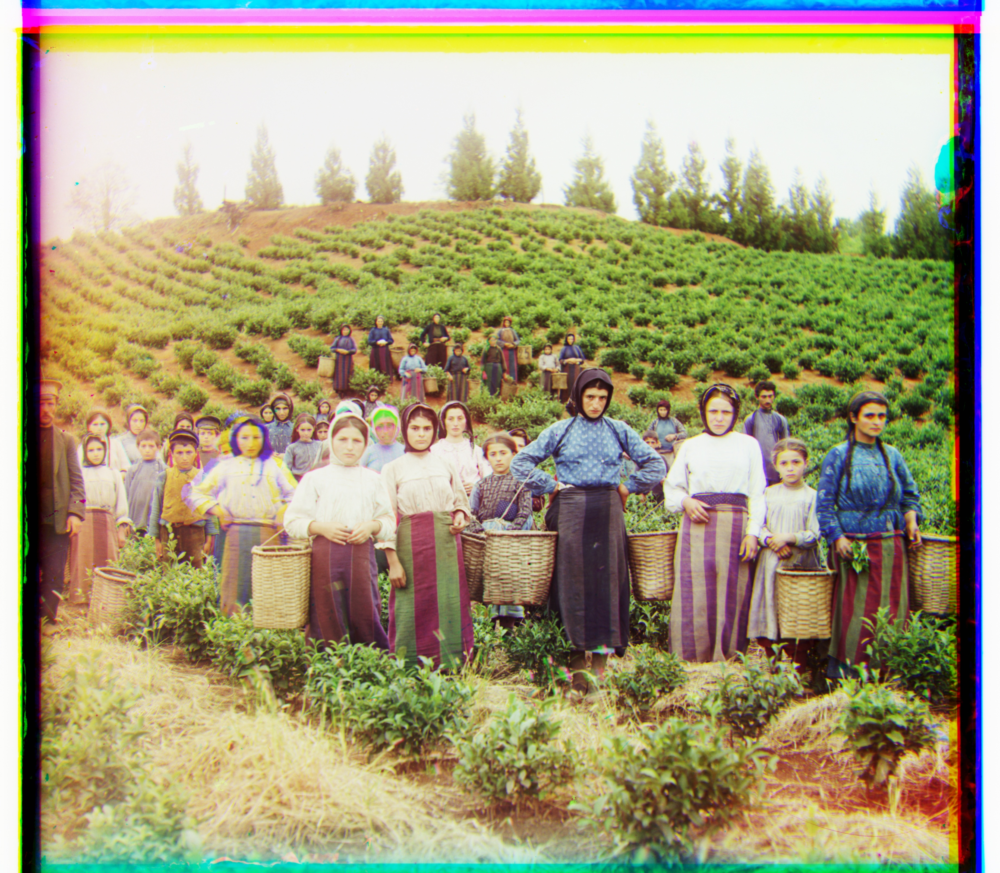
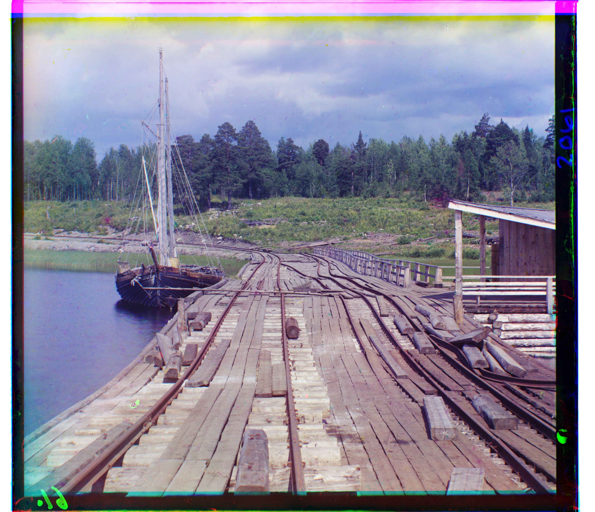
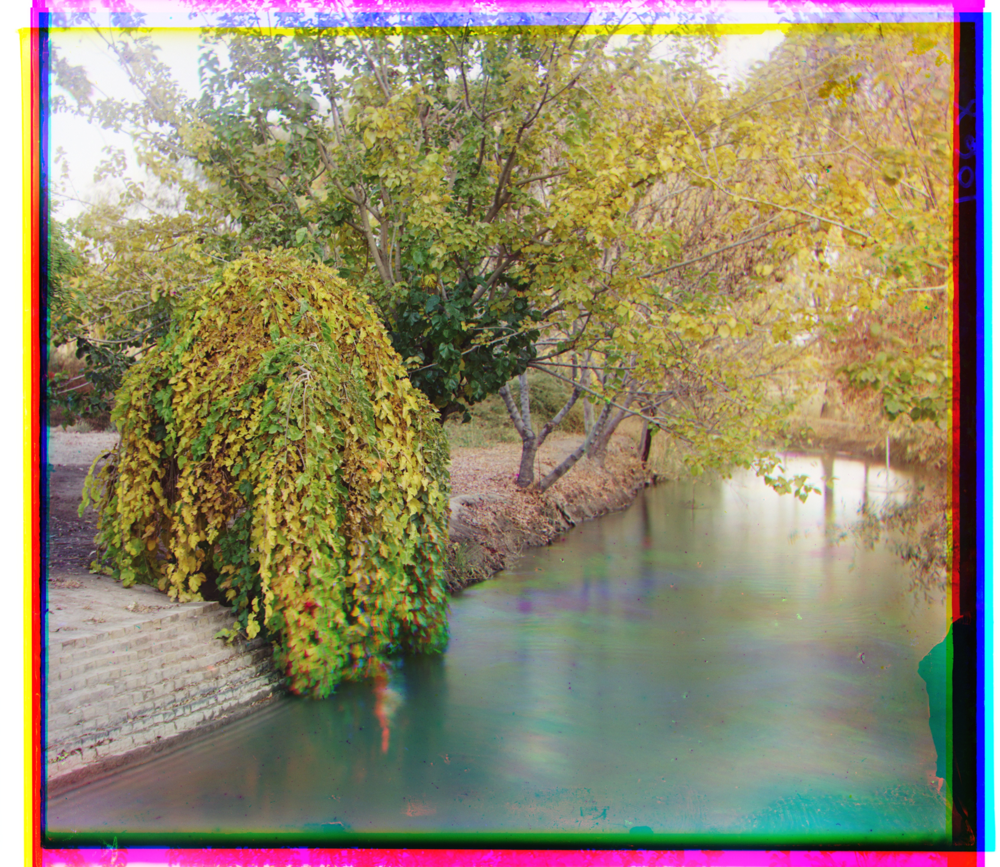
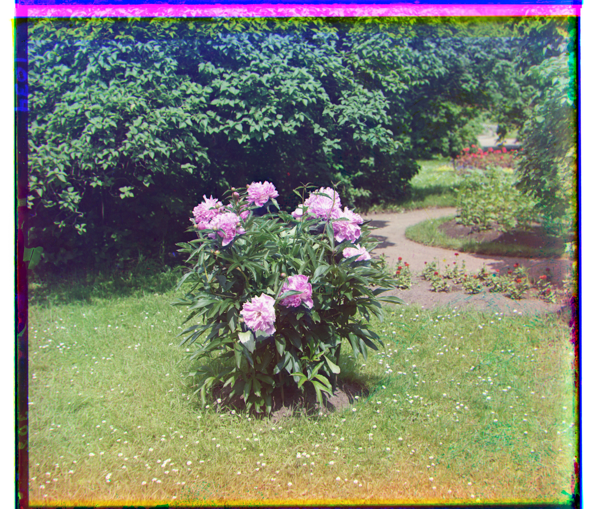
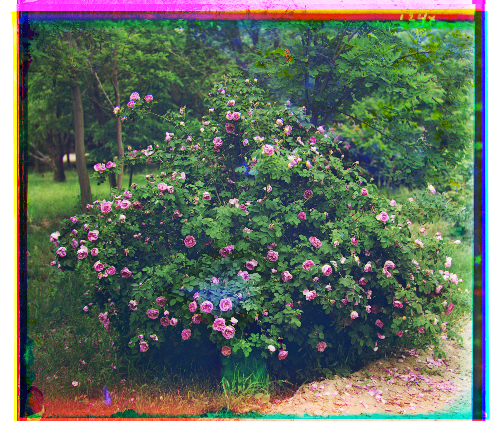

← Back to Portfolio
Project 1: Images of the Russian Empire
Colorizing the Prokudin-Gorskii Photo Collection
Overview & Approach
Sergei Mikhailovich Prokudin-Gorskii recorded three-color exposures on glass plates (using red, blue, and green filters) across early 20th-century Russia.
In this project, I aim to take the digitized glass plate scans, extract the three color channels (B, G, R),
and automatically align them to produce a color image.
I read in each glass plate scan as a grayscale image, and then separate it up into the 3 color channels - blue, green, and red, by evenly splitting up the image into thirds.
I then use blue as a fixed reference, and separately find the optimal displacements for the red and green channels that would result in the most aligned image once the channels are stacked on top of one another.
For small images in a JPG format, I perform an exhaustive search over a [-15, 15] displacement window. The metric used to compute the minimum displacement is the L2 norm, or Euclidean Distance, which has the following equation:
$$ \text{Euclidean Distance} = \sqrt{\sum \big(C_1 - C_2\big)^2} $$
For larger images in a TIF format, I use an image pyramid to recursively downscale images, compute the optimal offsets on the resulting blurrier images, and then refine the displacements at higher resolutions.
Part 1: Single-Scale Alignment (Small Images)
For smaller, lower-resolution JPG images, I used a displacement window of [-15, 15] to shift my red and green channels, both vertically and horizontally, to test which displacements would result in the best alignment between the channels.

cathedral.jpg
Green: (5, 2)
Red: (12, 3)

monastery.jpg
Green: (-3, 2)
Red: (3, 2)

tobolsk.jpg
Green: (3, 3)
Red: (6, 3)
Implementing Cropping
Initially, the output of monastery.jpg was noticeably misaligned. Because of this, I implemented cropping into my algorithm.
Cropping each of the images by 10% for each margin prevents the edges of the images from skewing the results of the alignment.
This is because the edges of the images are typically borders with extreme contrast, or wrapped-around pixels resulting from rolling the image during testing.
Both of these distort the displacement metric, so cropping them out significantly improved the final aligned output:

monastery.jpg - before cropping
Green: (-6, 0)
Red: (9, 1)
monastery.jpg - after cropping
Green: (-3, 2)
Red: (3, 2)
Part 2: Image Pyramid Alignment (Provided Examples)
For larger, higher-resolution TIF images, the current single-scale alignment algorithm window is not large enough to handle the potential channel displacement these images may have.
Extending the window is a potential solution, but this would be extremely inefficient, and thus not a viable solution to find the best alignment.
Instead, I implemented an image pyramid to more efficiently search for displacements. For each channel, I recursively resize the most recent level to be 1/2 of its current width and height, stopping once the shortest edge is less than 100 pixels.
Throughout this rescaling, I also apply anti-aliasing, which filters out fine, high-frequency details from an image before sampling it at a lower resolution, preventing distorted patterns.
When the image becomes small enough, this reduces to the single-scale case, where a displacement window of [-15, 15] is used to calculate the optimal displacement at this level.
Then for levels higher up, the optimal displacement computed at the previous level is used as the starting point for the current level to compute the optimal displacement. This continues until we reach the topmost level, and thus have computed the optimal displacement to align the channels.
As in the single-scale alignment case, I cropped each image channel before computing the minimum displacement between the channels to prevent the edges from skewing the results.

cathedral.jpg
Green: (5, 2)
Red: (12, 3)

church.jpg
Green: (25, 4)
Red: (58, -4)

emir.jpg
Green: (49, 24)
Red: (26, -829)

harvesters.jpg
Green: (59, 16)
Red: (123, 13)

icon.jpg
Green: (41, 17)
Red: (89, 23)

ilemselga.jpg
Green: (40, 7)
Red: (130, 11)

melons.jpg
Green: (81, 10)
Red: (178, 13)

monastery.jpg
Green: (-3, 2)
Red: (3, 2)

religious_painting.jpg
Green: (27, 3)
Red: (68, 7)

self_portrait.jpg
Green: (78, 29)
Red: (176, 37)

siren.jpg
Green: (49, -6)
Red: (95, -25)

three_generations.jpg
Green: [53, 14]
Red: [112, 11]

tobolsk.jpg
Green: [3, 3]
Red: [6, 3]

wharf.jpg
Green: (15, -7)
Red: (82, -16)
Part 3: Additional Prokudin-Gorskii Images (Pyramid)
I selected 3 additional images from the Prokudin-Gorskii collection and also aligned them using the multiscale image pyramid algorithm.

canal.jpg
Green: (28, 24)
Red: (46, 48)

peonies.jpg
Green: (51, 3)
Red: (104, -6)

roses.jpg
Green: (31, 20)
Red: (82, 35)
Failure Cases & Analysis
My algorithm failed at aligning the emir.jpg image. Specifically, it selected the shifts of (49, 24) for the green channel, and (26, -829) for the red channel.
This was not the correct alignment for the red channel, and as a result, the red portion of the image is positioned significantly farther left from where it should be.
This is very likely caused by the brightness of the blue robe in the image, which will appear very bright in the blue channel, but almost black in the red channel.
Because of this, the calculated displacement between the proper alignment of these channels is likely very high, and therefore is not considered to be the correct alignment.
The algorithm instead tries to match the robed portion of the red channel to a dark portion of the background in the image.